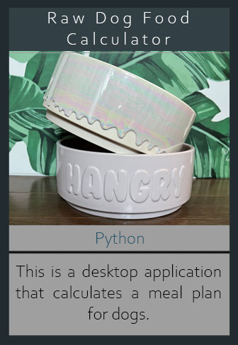
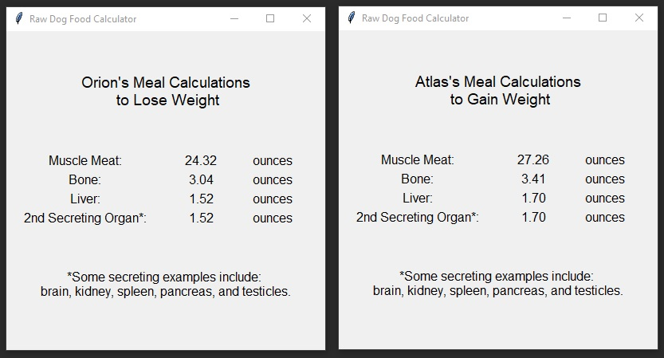

Raw Dog Food Calculator
 OverviewWith my veterinary technician experience and passion for animal nutrition, I wanted to create a desktop application that would easily calculate meal plans for dogs. This project takes user input and creates a meal plan based on the dog's current and goal weights. There is also an entry box for users to input their pet's name. If the user doesn't input a valid number in the weight entry box, an error screen will pop-up. Multiple windows can be displayed if pet parents wanted to create plans for multiple dogs or if they wanted to compare meal plans based on weight. Having the ability to display multiple windows on the screen makes it easier for owners to prepare their grocery lists. The program also provides users with the ability to choose between using pounds/ounces or kilograms/grams.
There is a lot of math and science that goes into creating a balanced meal plan for dogs. I also work with my veterinarian in creating balanced meal plans for my dogs. To maintain the current dog's weight, the meal weight would be 2.5% of their weight. To gain weight, the meal weight would be 3% of their weight. To lose weight, the meal weight would be 2% of their weight. My calculations follow the 80/10/5/5 rule where 80% of the meal weight would be muscle meat, 10% would be bone content, 5% would be liver, and 5% would be a second secreting organ of the owner's choice. This program makes it easy for raw-feed owners because it automatically calculates the meal percentages for the user.
Takeaway
This is my first desktop program that involved creating a GUI in Python. This was a fun project for me because I have always wanted a calcuator program that would allow me to display two different meal plans since I have two dogs. Currently, the calculators online don't give me the option to display two windows unless I open a whole new tab in my browser and inputing the other dog's information. Since this was my first time using Tkinter to create a GUI, I had a bit of trouble with understanding how the grid worked. I couldn't get my windows to display the grid widget along with a small blurb about secreting organs at the bottom of the grid. I found out that my problem was that I was trying to use pack() and grid() together on the widget, which was not possible. As a solution, I added the blurb as a part of the grid and changed the column span for that cell only.
Tools
● PyCharm Community Edition 2022.3.3
Tkinter
Language(s)
● Python 3.11
GitHub Repo
Project Output
Output of the Two Calculations

◁ ATM Selections My Website ▷